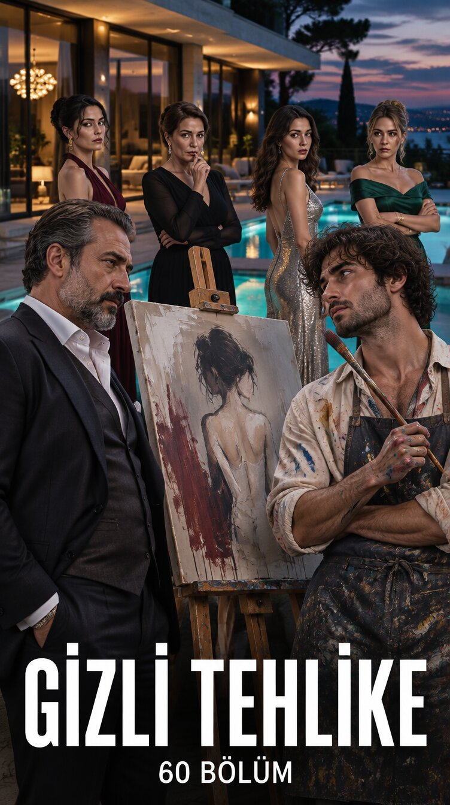
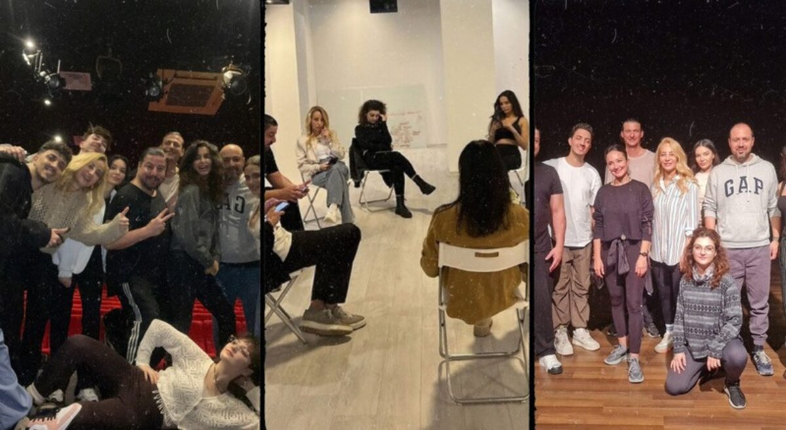

Kendinden Kaçak
Sinema filmi · 2021 · 1 sa 35 dk
Sinema · Dizi Film · Sahne Sanatları
Sinema4 sinema ve TV filmi
TV DizisiAlman Kuzusu · TRT Türk
Microdrama3 dikey dizi · DramaPops

Müzikalİstanbul Efendisi Müzikali · 3 ödül
Tiyatro Oyunları2 oyun · Hop Sahne
Yapımlar · 01
2018'den bugüne üç sinema filmi ve bir TV filmi.
Sinema filmi · 2021 · 1 sa 35 dk
Sinema filmi · 2020 · 1 sa 51 dk
İstiklal Marşı'nın 100. yılı, T.C. Cumhurbaşkanlığı himayesinde
TV filmi · 2019 · 1 sa 29 dk
Sinema filmi · 2018 · 1 sa 35 dk
Yapımlar · 02
TV dizisi · TRT Türk
[DİZİNİN KISA TANITIMI]
Yapımlar · 03
Telefon için çekilen dikey diziler. DramaPops'ta yayınlanan üç yapım, her biri 60 bölüm (2024).
Teknede yaz tatili yapan altı arkadaş ve aralarındaki entrika.
Bir tiyatro oyununun provalarında beş kişilik ekip: entrika, aşk ve gizem.

Havuzlu lüks bir villada zengin bir iş adamı ile misafiri ressam arasındaki gizli bağ.
Yapımlar · 04
Müzikal · 2025
Musahipzade Celal'in klasiği, Engin Alkan rejisi ve canlı orkestrayla. Prömiyer: 8 Ocak 2025, Hop Sahne.
Ödüller
Yapımlar · 05

Oyun · 2023
Donald Margulies'in Pulitzer ödüllü oyunu. Hop Sahne'nin açılış yapımı.
Yöneten: Özen Yula
Oynayanlar: Ahmet Tansu Taşanlar, Özge Borak, Ümit Kantarcılar, Derya Artemel
Tek kişilik oyun · Prömiyer 24 Ekim 2024
Gerçek yaşam öykülerinden yola çıkan, insanın yaşama direncini anlatan tek kişilik oyun.
Yazan ve yöneten: Metin Balay
Oynayan: Arif Pişkin
Hop Atölye çatısı altında, sektörün içinden isimlerle eğitimler.
MasterClass
Altı hafta, her cumartesi. Konuk yönetmenin seçtiği film birlikte izlenir, ardından film okuması ve yönetmenle söyleşi yapılır.
Ezel Akay
Ömer Faruk Sorak
Sinan Çetin
Hakan “Ketche” Kırkavaç
Reis Çelik
Gani Müjde

[PROGRAM AÇIKLAMASI]
[PROGRAM AÇIKLAMASI]

Hop Sahne · Bakırköy / İstanbul
3 salon · 690 koltuk
460koltuk
Büyük prodüksiyon, müzikal, konser
120koltuk
Oyun, okuma, söyleşi
110koltuk
Deneysel sahne, atölye, prova
+100.000
tiyatro izleyicisi, her sezon
Zeytinlik, Türkçü Sk. No:6, Bakırköy / İstanbul
Program ve bilet: hopsahne.comSinema filmi, TV dizisi, dikey microdrama, müzikal ve tiyatro. Aynı yapımcı, aynı kalite çizgisi.
Alman Kuzusu TRT Türk'te dört sezon, 52 bölüm yayınlandı. AKİF, T.C. Cumhurbaşkanlığı himayesinde çekildi.
Üç salonlu Hop Sahne ve Hop Atölye, hiçbir kurumdan destek almadan kuruldu. Oyuncu, yazar ve yönetmenle her gün aynı çatı altındayız.